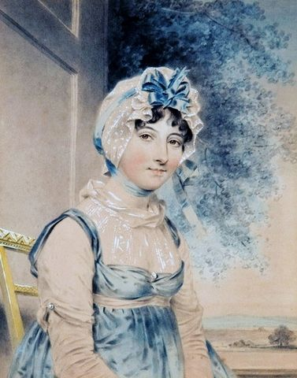
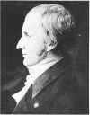

The Collected Letters of Thomas Beddoes
Poet, political campaigner and chemical experimentalist as well as medical doctor, Dr. Thomas Beddoes (1760-1808) was, in Roy Porter's words, 'a central late-Enlightenment figure', a man of great influence on the development of science, medicine and literature because of his transmission of ideas in lectures, in print and in letters. By dint of his theoretical publications, experimental programme and, most of all, his vast correspondence network, Beddoes played a leading role in moving Enlightenment thought across generations and borders, fomenting developments in fields from therapeutic medicine to chemistry to poetry.
This project to collect and publish Beddoes' correspondence will allow a new and transformative understanding of the ways in which innovations in science, medicine, literature and politics were mutually generative. It will provide striking new perspectives on how correspondence networks – both within Britain and internationally – shaped a 'culture of enquiry' in which investigations in literature medicine, chemistry, philosophy, and social reform were pursued together.
The project will publish a fully-annotated print edition of all surviving letters written by Beddoes (Cambridge University Press, 2026); it will also provide the letter-texts on this site. The link in the side bar will connect to this online source.
The edition will include letters to major literary and scientific figures of the period:
- Joseph Black (1728-99), discoverer of carbon dioxide, latent heat and specific heat. A popular and respected lecturer at the University of Edinburgh, where Beddoes met him as a student.
- Samuel Taylor Coleridge (1772-1834), poet, literary critic and philosopher. It was Beddoes who procured Coleridge his first job in journalism and who introduced him to German philosophy.
- Erasmus Darwin (1731-1802), doctor, poet and political radical.
- Humphry Davy (1778-1829), Davy's stellar career began as Beddoes's assistant at the Pnuematic Institution in Bristol. (The Collected Letters of Humphry Davy is also available).
- Maria Edgeworth (1768-1849): Beddoes’s sister-in-law, who developed her educationalist writings in tandem with Beddoes.
- Thomas Malthus (1766-1834), economist, best known for his book An Essay on the Principle of Population (1798).
- Joseph Priestley (1733-1804), discoverer of oxygen and other gases; emigrated to America in 1794; political radical.
- James Watt (1736-1819), inventor, chemist and developer of the steam engine.
- Thomas Wedgwood (1771-1805), experimentalist, philosopher and educationalist.
 |
 |
 |
 |
 |  |
 |
 |
 |
The project is being led by Professor Tim Fulford (de Montfort University, Leicester, UK) and Dr Dahlia Porter (University of Glasgow, UK). Dr Sara Slinn is the project's research assistant.
The Collected Letters of Thomas Beddoes is being funded by the Arts and Humanities Research Council, part of UK Research and Innovation. The AHRC funds outstanding original research across the whole range of the arts and humanities, providing economic, social and cultural benefits to the UK, and contributing to the culture and welfare of societies around the globe.